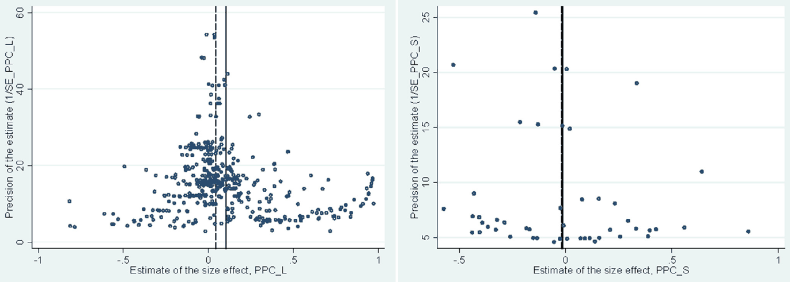
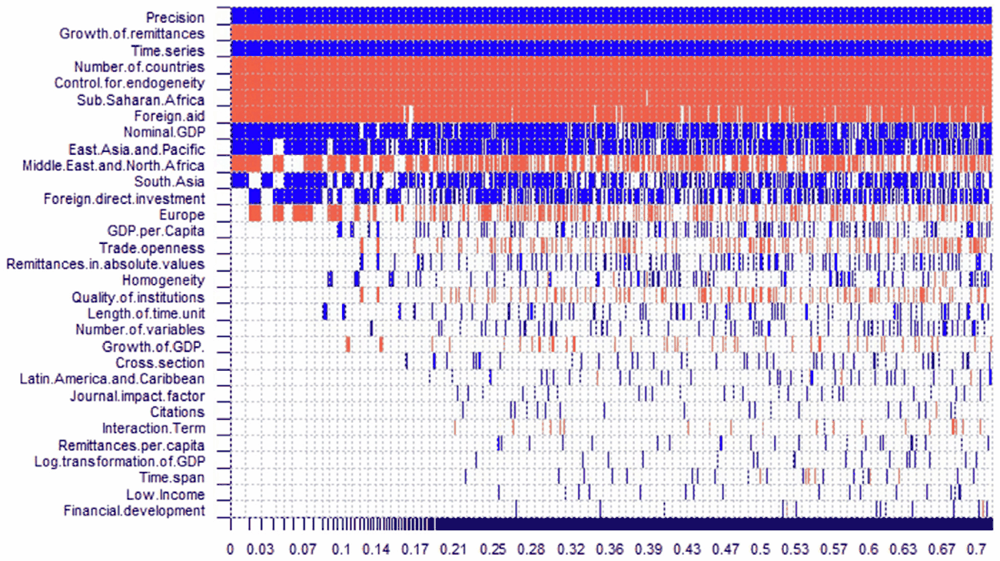

Alina Cazachevici, Tomas Havranek, and Roman Horvath (2020), "Remittances and Economic Growth: A Meta-Analysis." World Development 134, 105021. https://doi.org/10.1016/j.worlddev.2020.105021.
Alina Cazachevici a, Tomas Havranek a,*, Roman Horvath a,b
a Institute of Economic Studies, Faculty of Social Sciences, Charles University, Prague, Czech Republic
b Institute of Economic Research, Slovak Academy of Sciences, Bratislava, Slovakia
Article history: Accepted 19 May 2020. Available online 5 June 2020.
JEL classification: D22, E58, G21, F63
Abstract
Expatriate workers’ remittances represent an important source of financing for low- and middle-income countries. No consensus, however, has yet emerged regarding the effect of remittances on economic growth. In a quantitative survey of 538 estimates reported in 95 studies, we find that approximately 40% of the studies report a positive effect, 40% report no effect, and 20% report a negative effect. Our results indicate publication bias in favor of positive effects. Correcting for the bias using recently developed techniques, we find that the mean effect of remittances on growth is still positive but economically small. Nevertheless, our results uncover noticeable regional differences: remittances are growth-enhancing in Asia but not in Africa. Studies that do not control for alternative sources of external finance, such as foreign aid and foreign direct investment, mismeasure the effect of remittances. Finally, time-series studies and studies ignoring endogeneity issues report systematically larger effects of remittances on growth.
Keywords: Remittances, Economic growth, Meta-analysis, Publication bias, Bayesian model averaging
1. Introduction
Remittances sent home by expatriate workers have accelerated dramatically in recent decades, from less than 50 billion USD in 1970 (in 2018 dollars) to over 600 billion USD annually in 2018.1 When one compares the size of different financial flows to low and middle-income countries, the volume of remittances proves to be broadly similar to the volume of net received foreign direct investment. The importance of remittances is also highlighted by the fact that their volume has surpassed triple the volume of all foreign aid (net official development assistance received) worldwide. From the macroeconomic perspective, remittances prove relevant especially for low-income countries, for which they constitute presently around 6% of gross domestic product (GDP). For countries such as Haiti, Kyrgyz Republic, Nepal, El Salvador, and Tajikistan, the ratio of remittances to GDP exceeds 20%. Nevertheless, remittances do not flow only to low- and middle-income countries. Among the top remittance-receiving countries in absolute terms are developed countries including Germany, France, and Belgium (Yang, 2011).
Remittances affect the receiving country’s economy through various transmission channels. On the one hand, remittances represent a vital source of external financing for the domestic economy, alleviating credit constraints, spurring investment, and thereby contributing positively to economic growth (Giuliano & Ruiz-Arranz, 2009). Remittances may also help the domestic economy during idiosyncratic recessions because they serve as an insurance mechanism, boosting consumption and increasing disposable income when other sources of domestic aggregate demand are depressed (Yang & Choi, 2007). On the other hand, remittances can have adverse effects, especially by contributing to the Dutch disease or to decreasing labor supply in the home country (Acosta, Lartey, & Mandelman, 2009).
Despite the obvious importance for low- and middle-income countries, previous research has not reached a consensus regarding the effect of remittances on economic growth, both in terms of the sign and the size of the estimated coefficient. In an attempt to move towards a consensus, we collect 95 published articles that report 538 estimates quantifying the effect of remittances on growth. We find that around 40% of these estimates show a positive and statistically significant effect. Approximately 20% of the estimates are negative and statistically significant, and around 40% are insignificant (based on the conventional 5% significance level). What accounts for such vast heterogeneity in the literature? To address this question, we conduct meta-analysis, a quantitative literature synthesis. We employ up-to-date meta-analysis methods, some of them developed in 2019, to analyze the causes of variation among the studies and to estimate the mean effect of remittances on growth after correcting for potential biases in the literature.
Meta-analysis represents a set of rigorous quantitative methods designed to review and evaluate empirical research (Doucouliagos, 2005; Stanley, 2001). Recent high-quality meta-analyses conducted in the field of development economics include Iwasaki and Tokunaga (2014) on the impact of foreign investment in transition economies, Benos and Zotou (2014) on the impact of education on economic growth, and Gunby, Jin, and Reed (2017) on the nexus between FDI and growth in China. But to the best of our knowledge, there has been no meta-analysis on the effect of remittances on growth. Using meta-analysis techniques we focus on the following questions: What is the typical effect of remittances on economic growth? Are the reported effects subject to publication bias (i.e., preferential treatment of some estimates based on their sign or statistical significance)?2 To what extent do characteristics such as research design, data, and estimation methods systematically influence the reported results?
We employ both linear and non-linear methods to correct for publication bias and account for model uncertainty in meta-analysis using Bayesian model averaging (Steel, 2020, provides an excellent and accessible survey of the technique). Our results suggest that the mean effect of remittances on growth is positive but economically small. Nevertheless, the mean effect masks important systematic heterogeneity. We uncover noticeable regional differences: remittances are growth-enhancing in Asia but not in Africa. In addition, our results show that the studies that do not control for alternative sources of external finance, such as foreign aid and foreign direct investment, mismeasure the effect of remittances. Therefore, a correct regression specification, especially one including other concurrent sources of external finance, is key for identifying the effect of remittances on economic growth accurately. Finally, our results indicate that time-series studies and studies ignoring endogeneity problems find systematically larger effects of remittances on growth.
The remainder of this paper is organized as follows: Section 2 presents how the effect of remittances on economic growth is typically estimated in the literature and provides an overview of the empirical studies on the topic (in line with the meta-analysis literature, we call them “primary studies”). Section 3 describes the methodology and data used in this paper. Section 4 provides weighted means of the reported effects of remittances on growth in both the short- and the long-term perspective. Section 5 presents the empirical results on potential publication bias and the remittances effect corrected for such bias. Section 6 analyzes the sources of heterogeneity in the literature. Section 7 provides concluding remarks. Robustness checks and the list of the studies included in the dataset are presented in the Appendix. The data and codes are available in an online appendix at meta-analysis.cz/remittances.
2. Measuring the effect of remittances on growth
In this section we briefly describe how primary studies estimate the effect of expatriate workers’ remittances on the economic growth of the receiving country and discuss the basic characteristics in which the studies differ. Our intention here is not to provide a detailed review of estimation methodology; for a detailed survey, we refer the reader to Yang (2011).
Primary studies typically estimate an extended variant of the following basic regression:
where and denote country and time subscripts, represents a measure of economic growth (or the level of economic development), is a measure of remittances, stands for a vector of control variables accounting for other factors affecting economic growth (e.g., financial development, trade openness, foreign aid, foreign direct investment, and efficiency of institutions), and is the error term. Equation (1) reflects the general and common panel data specification but can be easily reduced to a cross-section or time-series setting.
Approximately 30% of the primary studies distinguish between the short- and long-term effect of remittances on growth using a version of the error correction model. Several recent studies use system general method of moments, which employes both level and difference equations. The technique considers the level of economic development as stationary although a mechanical test may suggest a unit root.
The primary studies typically use panel or time-series techniques, while only a few studies ignore the time dimension and analyze cross-section data. Nearly 60% of primary studies attempt to address endogeneity issues, most commonly using an instrumental variables framework. The studies tend to analyze a rich set of countries at a different level of economic development and from different continents. Focusing solely on low-income countries or small regional groups of countries is less common. The primary studies also differ in the use of the dependent variable: around half of the studies use GDP growth, while close to the other half uses the level of GDP. The remaining studies employ total factor productivity (TFP) as the dependent variable (Jayaraman, Choong, & Kumar, 2012; Rao & Hassan, 2012).
Many studies use several econometric methods to assess the robustness of their results (Cooray, 2012; Konte, 2018; Kratou & Gazdar, 2016). But primary studies differ in terms of the thoroughness and magnitude of robustness checks. For example, the number of equations reported per study is different for papers that use time series and panel data, with an average of 3 equations for time series and 7.5 equations for panel data. Some studies analyze the data at a regional level (e.g., Nyamongo, Misati, Kipyegon, & Ndirangu, 2012; Ramirez, 2013), while others work with a world-wide dataset (e.g., Feeny, Iamsiraroj, & McGillivray, 2014; Konte, 2018). Because different studies report a different number of estimates, this means that they have different weight in our meta-analysis. To account for this issue, as a robustness check we use a weighting scheme that gives each study the same importance in meta-analysis. The results are similar to our baseline case.
Around one-fifth of the primary studies include an interaction term between remittances and another explanatory variable. Financial development is the most common conditioning factor employed in the interaction terms. Mundaca (2009) finds that while remittances have a positive long-run effect on economic growth, financial inclusion can further enhance the positive relationship. Mohamed and Sidiropoulos (2010) reach the conclusion that remittances have a positive impact on economic growth both with and without interacting remittances and financial development. Nevertheless, Bettin and Zazzaro (2012) find that remittances only exhibit a positive effect on economic growth in countries with an efficient domestic banking sector, which, according to the authors, can serve as an efficient intermediary in channeling remittances to growth-enhancing projects.
Catrinescu, Leon-Ledesma, Piracha, and Quillin (2009) offer a different conditioning variable: the quality of domestic institutions. Institutions represent an important determinant of the effect of remittances on the receiving economy. Several other studies also support this conclusion (e.g., Mohamed & Sidiropoulos, 2010; Singh, Haacker, Lee, & Le Goff, 2010; Bettin & Zazzaro, 2012). On the other hand, Imad (2017) finds that while institutions contribute to economic growth, there is no direct relation between remittances and economic growth.
Ziesemer (2012) distinguishes between the direct and indirect effects of remittances on growth. While single-equation approaches examine at most the effect of remittances conditional on another variable, a multi-equational approach allows for more richer propagation of remittances to growth, i.e. remittances can have a direct effect on growth as well as an indirect effect through other variables. Ziesemer (2012) finds that both direct as well as indirect effects matter. In the meta-analysis we focus on direct effects since indirect ones are not easily comparable with the former.
Overall, the primary studies differ not only in terms of estimation approaches, the choice of the dataset, and regression specifications. The studies also differ with regard to their findings. Approximately 40% of the studies document a positive effect of remittances on growth (see, for example, Cooray (2012), Driffield and Jones (2013), Lartey (2013), Nsiah and Fayissa (2013), Imai, Gaiha, Ali, and Kaicker (2014)). In contrast, Chami, Fullenkamp, and Jahjah (2005) find a negative effect and attribute it to the moral hazard problem. Examples of other studies that also indicate a negative effect include Le (2009), Singh et al. (2010), Raimi and Ogunjirin (2012), and Nwosa and Akinbobola (2016). Overall, 20% of primary studies report a negative effect of remittances on growth.
In addition, approximately 40% of the primary studies suggest that remittances have no significant impact on economic growth, or that such an effect is ambiguous (see, among others, Rao & Hassan, 2012; Senbeta, 2013; Feeny et al., 2014; Konte, 2018).3
3. Methodology and data
In conducting this quantitative synthesis, we follow the guidelines for the meta-analysis of economic research developed by Havranek et al. (2020). We search for potentially relevant studies in Scopus using the following keyword combination: “remittances + economic growth”. The search was conducted on 23rd April 2018 and identified 460 published articles.
Nevertheless, in the meta-analysis we can only include articles that undergo an empirical analysis, report the size of the effect of remittances on economic growth, and measure the precision of the effect size (using the standard error, t-statistic, p-value, or another other approach from which the standard error can be recomputed, such as sample means in the case when the delta method has to be used).4
An additional adjustment to the dataset was performed to account for the primary studies that include an interaction term between remittances and other variables, most commonly financial development. These studies represent around one-sixth of all the articles in the dataset. To account for interaction terms in our framework, we follow Havranek and Irsova (2011, 2012), and Irsova and Havranek (2013), calculate the average marginal effect of remittances on growth, and apply the delta method to approximate the respective standard errors:
where denotes the marginal effect of remittances, is the estimated effect size of remittances reported by the primary study, represents the estimated coefficient reported for the interaction term, and is the mean value of the variable included in the interaction term, reported in the summary statistics of the primary study. Since some of the originally considered articles did not report summary statistics for explanatory variables, the method in the Eq. (3) could not have been applied for these studies, and the corresponding estimates were excluded from the final dataset.
The standard errors for the marginal effect of remittances are computed, as we have noted, using the delta method. Because the entire dataset used in a primary studies is typically not available to us, we do not have information on covariation between variables, and thereferore assume the covariances to be zero. So we obtain
where denotes the standard error of the marginal effect of remittances, is the standard error of the estimated effect size of remittances reported by the primary study, and represents the standard error of the estimated coefficient reported for the interaction term. Similar adjustments were necessary for quadratic relationships estimated in the literature. Discarding the estimates with standard errors approximated using the delta method does not change our results qualitatively.
Our final dataset includes 95 articles with 538 equations (the number of equations per study ranges from 1 to 40, with an average of 6 equations per study) and is available in an online appendix at meta-analysis.cz/remittances. The list of studies included in the meta-analysis is reported in Appendix A. We only consider the primary studies that are published, and there are three reasons for this strategy. First, feasibility: we already have 95 studies in our dataset, which is a high number for a meta-analysis in economics. Collecting and checking the data from upublished studies would take several additional months. Second, quality: published studies have been subjected to peer-review, so we expect them to be, on average, of higher quality than unpublished manuscripts. Unpublished papers are also more likely to contain typos in their regression tables, which complicates meta-analysis and contributes to attenuation bias. Third, publication bias: Rusnák, Havranek, and Horváth (2013) show that both published and unpublished primary studies display a similar degree of publication bias, as unpublished papers are written with the intention to publish.
The primary studies also differ in their use of a proxy for economic growth. About 70% of the studies use GDP growth (real or nominal) as the dependent variable, while others use the level of GDP for the same purpose. We decided not to exclude the studies employing the GDP level. As a robustness check, we conduct the meta-analysis on the dataset including only the equations using GDP growth, and obtain results that are similar to our baseline case. The corresponding estimations are reported in the Table B1 in Appendix B.
Furthermore, we divide the dataset into two subsets, distinguishing between equations estimating the long-term and short-term effect with 490 and 48 observations, respectively. We exclude three outliers for which the t-statistic lies more than 5 standard deviations away from the mean; they probably represent typos in primary studies. Thus 487 observations remain for long-term effects, and 48 for short-term effects. We understand that the sample of 48 observations does not represent a sufficiently large sample on its own, but keep it for the sake of comparison with the main, long-run dataset, and report the results in Appendix D (Table D1).
4. Estimating the mean effect
The estimated regression coefficients of the effect of remittances on economic growth collected from the primary studies are sometimes not directly comparable because these studies differ in their use of proxies for both remittances and economic growth. Besides, they also vary in the way they transform the respective variables and the functional form they employ (level, logarithm, growth, etc.). Therefore, following several previous meta-analyses (e.g., Doucouliagos, 2005; Babecky & Havranek, 2014; Zigraiova & Havranek, 2016), we use the partial correlation coefficient (PCC) to standardize the effect sizes across the primary studies. We calculate the PCC as follows:
where denotes the partial correlation coefficient from regression in study , denotes the corresponding t-statistic, and corresponds to the number of degrees of freedom. represents the partial correlation coefficient between remittances and economic growth and indicates the strength and direction of the relationship between the two when all other variables are held constant; it can take values within the interval [−1,1]. The sign of the partial correlation coefficient remains the same as the sign of the coefficient in Eq. (1). For each partial correlation coefficient, we calculate the corresponding standard error according to the following formula, which makes it clear that the t-statistic remains the same for PCC and the original coefficient reported in the paper:
where denotes the standard error of the partial correlation coefficient from regression in study , and is the corresponding t-statistic.
Table 1 reports summary statistics for the partial correlation coefficient, separately for the datasets of long- and short-term effects of remittances on economic growth. The simple averages are 0.103 for the long-run effect and −0.015 for the short-run effect. This result suggests that while remittances may contribute to economic growth in the long run, they do not necessarily do so in the short run.
Nevertheless, a simple mean of partial correlation coefficients suffers from the following shortcomings as an estimate of the underlying effect. First, it does not take into account the precision of the estimate, as in this case each partial correlation coefficient carries the same weight regardless of the size of the sample from which it was obtained. Second, the simple average does not account for potential publication selection, which can bias the reported effect. It is more appropriate to apply the fixed and random effects models (Borenstein, Hedges, Higgins, & Rothstein, 2011); note that these are the terms used in the quantitative synthesis literature and do not correspond to fixed and random effects in econometrics.
The fixed effects approach weights the partial correlation coefficients by the inverse of their estimated variance. Thus, the obtained average is 0.053 for the long-run and −0.059 for the short-run effect. This finding implies that when larger weights are assigned to larger studies, the mean effect decreases, which may indicate selection bias. The random-effects approach additionally accounts for between-study heterogeneity (as different studies will use different datasets and will apply a different methodology to estimate the effect of remittances on economic growth). The average obtained by the random effect model broadly confirms the findings of the previous two methods, yielding the estimates of 0.095 for long-run and −0.020 for short-run effects.
Table 1 shows that the means of partial correlation coefficients for the long-run effect of remittances are significant at the 1% level, while the corresponding short-run averages are statistically insignificant (except the fixed-effects estimate, which is significant at the 5% level). Doucouliagos (2011) provides guidelines on the interpretation of partial correlation coefficients in economics and suggests that values larger than 0.327 suggest a strong effect, values between 0.173 and 0.327 represent a medium effect, values between 0.173 and 0.070 suggest a small effect, and values below 0.070 suggest no effect at all. We conclude that our results suggest a small effect of remittances on economic growth in the long run and no effect in the short-run.
Nevertheless, it is important to emphasize that the numbers reported above may be biased. First, they do not account for the fact that estimates with different signs and statistical significance may have a different probability of being reported; the problem is usually referred to as publication bias or selective reporting.5 Second, these numbers do not properly account for heterogeneity in the methodology of primary studies. Although the random-effects model allows for heterogeneity, it assumes it to be random, which does not have to be realistic. We discuss both issues in the next sections, where we further develop our estimation approach towards identifying the underlying effect of remittances on economic growth.
5. Consequences of publication bias
Publication bias occurs in academic research whenever researchers, reviewers, or editors prefer certain research outcomes: for example, estimates that are in line with the prevailing theory or that are statistically significant at standard levels (Stanley, 2005). The field of economic research is no exception, and many meta-analytical studies document publication bias. For example, Doucouliagos (2005) shows that the literature on the nexus between economic freedom and economic growth is strongly affected by bias. Doucouliagos and Stanley (2009) document publication bias in the literature on the minimum-wage effects. Havranek, Irsova, and Janda (2012) find that studies on the price elasticity of gasoline demand also suffer from publication selection bias. Rusnák et al. (2013) report evidence of publication selection against the price puzzle in the studies on the impact of monetary policy shocks on the price level, especially for the responses with longer horizons following monetary policy shocks. Harrison, Banks, Pollack, O’Boyle, and Short (2017) conclude that publication bias affects many topics in research dedicated to strategic management. Therefore, previous meta-analyses suggest that publication bias is commonly present and that it is advisable to examine its potential effects.6
| Long-term | Short-term | |||||
|---|---|---|---|---|---|---|
| Number of estimates | 469 | 48 | ||||
| Averages | PCC | 95% CI | PCC | 95% CI | ||
| Simple Average | 0.103 | 0.077 | 0.128 | −0.015 | −0.108 | 0.079 |
| Fixed effects | 0.053 | 0.048 | 0.058 | −0.059 | −0.088 | −0.031 |
| Random effects | 0.095 | 0.077 | 0.112 | −0.020 | −0.109 | 0.068 |
Notes: PCC denotes the estimated partial correlation coefficient for the impact of remittances on economic growth. A simple average is the arithmetic mean of the effect size of remittances on economic growth. The fixed-effects estimator weights the partial correlation coefficients by the inverse of their variance. The random-effects estimator weights the partial correlation coefficients by the inverse of their variance, additionally accounting for heterogeneity amongst primary estimates.
Following the standard approach in research synthesis, we examine the funnel plot for the effect of remittances on economic growth. Fig. 1 provides the results separately for the long-term and short-term coefficients. The horizontal axis shows the standardized effect size calculated for each estimate from the primary studies. The vertical axis represents the precision of the estimates. In the absence of publication bias, the funnel plot should resemble a symmetrical inverted funnel, with the most precise estimates concentrated close to the underlying effect (which in the absence of publication bias would be the line representing the mean estimate, one that can in general be zero, positive, or negative). The less precisely estimated effects are supposed to be widely dispersed at the bottom of the figure. Both positive and negative estimates with low precision would be depicted in the funnel plot with the same frequency, giving rise to symmetry. In the presence of publication bias against positive or negative estimates, however, the funnel plot will not be symmetric. In case the statistically significant estimates are preferred to the insignificant ones, the funnel plot becomes hollow, as the observations with low precision and low magnitudes are underrepresented.
A visual inspection of the funnel plots in Fig. 1 indicates that, regarding the long-run effect of remittances, the right-hand side of the funnel plot appears to be somewhat denser. This result suggests an inclination for preferentially reporting the positive impact of remittance on economic growth. Also, the funnel plot appears to be hollow at the bottom, which can indicate preference for statistically significant results in the literature. Regarding the short-run effect in the right-hand part of Fig. 1, the funnel plot suggests that the low number of observations prevents us to draw any conclusions, although the reported mean effect suggests that the short-run effect of remittances might be negative. In any case, the funnels are not overly asymmetric: if there is any publication bias, it does not seem to be especially strong.
Some researchers criticize the use of PCCs (e.g., Sachar, 1980) since the transformation of data might affect the outcome of a meta-analysis. In our case, however, PCCs remain the only option for a full-fledged meta-analysis, because individual estimates are not comparable without conversion to a common metric. Therefore, to check the impact of the PCC transformation, we generate a funnel plot for a subsample of estimates in our dataset where the choice of the dependent variable and proxy for remittances is homogeneous, and we can work with elasticities instead of PCCs. We choose the primary studies that use the growth of real GDP per capita as the dependent variable and the share of remittances to GDP as a proxy for remittances. This gives us 192 observations, and the respective funnel plot, which is depicted in Appendix D, overall confirms our preliminary conclusions: the funnel plot is slightly asymmetric, with a denser right-hand side and a hollow bottom part.
Nevertheless, a visual inspection of a funnel plot is always subjective. More formal testing is necessary to determine the presence of the publication bias and to estimate the underlying effect of remittances on economic growth. To test for publication bias formally, we proceed to the so-called funnel asymmetry test, which implies estimating the following regression:
where and are the partial correlation coefficients and the corresponding standards errors previously defined, respectively, and represents the regression error term. The coefficient denotes the true effect corrected for publication bias (under the important assumption that publication selection is a linear function of the standard error), and coefficient indicates the direction and magnitude of publication bias.
The above approach, which is based on Card and Krueger (1995) and Stanley (2005), considers that in the absence of publication bias the estimated effect should be randomly distributed across studies, and the estimated effect size should not be correlated with its standard error. If the opposite is true, publication bias is present and certain estimates are preferred over the others, the relationship between the estimated effect size and the standard error becomes significant. The lack of any correlation between the two quantities in the absence of publication bias is a direct consequence of the properties of the econometric methods used in primary studies. These methods ensure that the ratio of the estimate to its standard error has a t-distribution, which in turn ensures that the nominator and denominator of the ratio are independent quantities.
We have to take into account the fact that Eq. (7) is heteroskedastic by definition because the explanatory variable is estimated as the standard deviation of the dependent variable. To control for heteroskedasticity and to obtain more efficient estimates, we use the weighted least squares (WLS) estimator, as suggested by previous research and Monte Carlo simulations (e.g., Stanley & Doucouliagos, 2015). Therefore, we multiply Eq. (7) by the precision of estimates () and obtain the following regression:
where and is the t-statistic of the partial correlation coefficient. To assess the robustness of the results, we apply the following methods along with WLS: iteratively re-weighted least squares (robust WLS); fixed-effects estimates (WLS with study dummies) and mixed-effects estimates (study-level random effects estimated by the restricted maximum likelihood method suitable for an unbalanced panel); instrumental variable estimates with the inverse of the square root of the degrees of freedom used as instrument for the standard error (as it is directly correlated with standard errors, but not much with the choice of methodology applied)7; and lastly, we run the WLS estimation weighted by the inverse number of equations reported per study.

In Table 2 we report the results of the tests for publication bias and the underlying effect of remittances corrected for the bias in the case of the long-run effect. The results indicate modest evidence for bias. Nevertheless, the results obtained by fixed effects, which is often seen as the most appropriate method because it controls for unobservable study-level differences, suggest statistically insignificant publication bias. Furthermore, according to the classification proposed by Doucouliagos and Stanley (2013), while the magnitude of the selectivity is substantial in the majority of specifications (with the value of in the interval between 1 and 2), it is “little to modest” according to the fixed effects estimation and the estimation weighted by the number of equations per study (with being less than 1). The underlying effect corrected for publication bias varies with respect to the applied methodology and in terms of statistical significance.
| Long-term | ||||||
|---|---|---|---|---|---|---|
| (1) WLS, clustered | (2) WLS, robust | (3) FE, clustered | (4) ME | (5) IV, clustered | (6) WLS, Equations, clustered | |
| Publication bias (β1) | 1499** | 1116*** | 0070 | 1212** | 3351** | 0.614 |
| (0,56) | (0,23) | (0,57) | (0,40) | (1,12) | (0,57) | |
| True effect (β0) | −0019 | −0026* | 0071 | 0058** | −0136* | 0133* |
| (0,03) | (0,01) | (0,04) | (0,02) | (0,06) | (0,06) | |
| Observations | 487 | 487 | 487 | 487 | 487 | 487 |
Note: The dependent variable is PCC; the estimated equation is Specifications (1)–(5) are weighted by inverse variance. Specification (6) is weighted by the inverse of the number of equations per study. Specifications (1), (3), (5), and (6) are estimated with standard errors clustered at the study level to account for likely within-study correlation of reported results. Specification (1) and (6) are estimated using WLS. Specification (2) is estimated using iteratively re-weighted WLS. Specifications (3) and (4) are the panel data regressions with fixed and mixed effects, respectively. Specification (5) is a panel data instrumental variables regression with fixed effects and the inverse of the square root of the number of degrees of freedom used as an instrument. Standard errors are reported in parentheses. , and denote significance at the 10%, 5% and 1% levels.
The problem with the regressions in Table 2 is that they assume a linear relation between publication selection and the standard error, which might not be realistic. In practice, estimates that are sufficiently precise to deliver statistical significance at the 5% level (or lower), are unlikely to suffer from publication bias. In that case, a linear approximation will overdo the correction for publication bias and create a downward bias, a bias in the opposite direction. To account for this problem, we additionally employ methods that allow for a nonlinear relation between selection effort and standard errors. The results are summarized in Table 3.
| Methodology | Bias-corrected effect of remittances on economic growth |
|---|---|
| Top 10 | 0.025 |
| WAAP | 0.042 |
| A&K | 0.121 |
| Stem-based bias correction model | 0.036 |
| Uncorrected mean | 0.103 |
Note: Top10 approach is using only 10% of the results, considering only the results with the most precise estimates. WAAP methodology applies a weighted average calculated only on the adequately powered estimates. A&K model tests for publication bias using the conditional probability of publication as a function of a study's results. Stem-based correction model uses only the studies with highest precision, which correspond to the "stem" of the "funnel" plot. Simple average of the full dataset is calculated as arithmetic average.
The first such technique is the “Top10” approach introduced by Stanley, Jarrell, and Doucouliagos (2010), who find that removing the 90% of the results with the least precise estimates will considerably reduce publication bias and is often more efficient in estimating the underlying effect than more conventional methods. The average long-term remittances effect calculated by the “Top10” method is 0.025, which, when compared to the average of 0.103 for the full dataset, also indicates publication bias. In addition, we apply the method of the weighted average of the adequately powered estimates (WAAP) by Ioannidis, Stanley, and Doucouliagos (2017) and obtain the corrected effect of 0.042, which is quite close to the results produced by the “Top10” approach. Furthermore, we use the recent selection model proposed by Andrews and Kasy (2019) and obtain a mean corrected effect of 0.121, which would suggest no bias. And finally, we apply the stem-based bias correction method proposed by Furukawa (2019), which focuses on the most precise studies: these studies form the “stem” of the funnel plot. The coefficient obtained by the stem-based approach is 0.036. The results of the robustness check confirm that once the correction for publication bias is performed, the underlying effect of remittances on economic growth is small in all of the methodological approaches: none passes Doucouliagos’s bar for a medium effect.
As for the short-run effect of the remittances on growth, the dataset is rather small and, therefore, we report the corresponding tests for publication bias in Appendix D.
6. Consequences of heterogeneity
We now take a step beyond the evidence presented in the previous section and examine how, in addition to publication bias, heterogeneity among and within primary studies matters for the reported results. As already outlined in Section 2, the primary studies vary in many aspects: they use different conditioning variables, different definitions of the dependent variable, and various samples or econometric approaches. To evaluate the role of systematic heterogeneity among the primary studies on the estimated effect of remittances on growth, we extend the Eq. (8) by adding variables that capture the features in which the primary studies vary:
where is the number of moderator variables, is the coefficient on the respective moderator variables, denotes the moderator variables listed in Table 4, which can have an effect on the estimates reported in the primary studies, and is the error term.
Table 4 presents and explains the explanatory variables that we include in our meta-analysis. The choice of the variables largely follows previous meta-analyses (for example, Havranek & Rusnak, 2013; Valickova, Havranek, & Horvath, 2015; Havranek, Horvath, Irsova, & Rusnak, 2015). The variables are divided into the following categories: the measure of economic growth, the measure of remittances, the choice of control variables, data and estimation characteristics, publication characteristics, and the region and income level of the countries included in the sample. The variance-inflation factors are below 10 for all the variables.8
| Variable | Definition | Long-run | Short-run | ||
|---|---|---|---|---|---|
| Mean | St. Dev. | Mean | St. Dev. | ||
| TSTAT | Estimated t-statistic of the effect size | 1.19 | 3.30 | −0.29 | 2.88 |
| PCC | Partial correlation coefficient | 0.10 | 0.29 | −0.01 | 0.32 |
| Precision | Precision of the estimated partial correlation coefficient (the inverse of the standard error) | 15.83 | 8.83 | 8.44 | 5.26 |
| Measure of economic growth | |||||
| GDP per Capita | Dummy, 1 if dependent variable is reported per capita, 0 otherwise | 0.86 | 0.35 | 0.40 | 0.49 |
| Nominal GDP | Dummy, 1 if dependent variable is adjusted for inflation, 0 otherwise | 0.32 | 0.47 | 0.48 | 0.50 |
| Growth of GDP | Dummy, 1 if growth of GDP is used as dependent variable, 0 otherwise | 0.71 | 0.45 | 0.50 | 0.51 |
| Log transformation of GDP | Dummy, 1 log transformation of dependent variable is applied, 0 otherwise | 0.52 | 0.50 | 0.40 | 0.49 |
| Measure of remittances | |||||
| Remittances in absolute values | Dummy, 1 if remittances in absolute values are used, 0 otherwise | 0.24 | 0.43 | 0.23 | 0.42 |
| Remittances per capita | Dummy, 1 if remittances per capita are used, 0 otherwise | 0.04 | 0.19 | 0.08 | 0.28 |
| Remittances of GDP (base cathegory) | Dummy, 1 if remittances as % of GDP are used, 0 otherwise | 0.72 | 0.45 | 0.67 | 0.48 |
| Growth of remittances | Dummy, 1 if growth of remittances is used, 0 otherwise | 0.08 | 0.27 | 0.23 | 0.42 |
| Control variables | |||||
| Foreign aid | Dummy, 1 if foreign aid is included, 0 otherwise | 0.10 | 0.31 | 0.17 | 0.38 |
| Foreign direct investment | Dummy, 1 if foreign direct investment is included, 0 otherwise | 0.27 | 0.44 | 0.52 | 0.50 |
| Trade openness | Dummy, 1 if trade openness is included, 0 otherwise | 0.67 | 0.47 | 0.56 | 0.50 |
| Financial development | Dummy, 1 if financial development is included, 0 otherwise | 0.46 | 0.50 | 0.21 | 0.41 |
| Quality of institutions | Dummy, 1 if quality of institutions is included, 0 otherwise | 0.26 | 0.44 | n/a | n/a |
| Interaction term | Dummy, 1 if interaction term of remittances with other variable is included, 0 otherwise | 0.21 | 0.41 | n/a | n/a |
| Data & estimation characteristics | |||||
| Panel data (base category) | Dummy, 1 is dataset is panel, 0 otherwise | 0.72 | 0.45 | 0.27 | 0.45 |
| Time series | Dummy, 1 is dataset is time series, 0 otherwise | 0.19 | 0.39 | 0.73 | 0.45 |
| Cross-section | Dummy, 1 is dataset is cross-section, 0 otherwise | 0.04 | 0.20 | n/a | n/a |
| Number of countries | Logarithm of number of countries in the sample | 2.96 | 1.44 | 1.23 | 0.90 |
| Time span | Logarithm of number of years in the sample | 3.28 | 0.42 | 3.30 | 0.53 |
| Length of time unit | Logarithm of number of years in the time unit | 1.15 | 0.68 | 0.67 | 0.09 |
| Number of variables | Logarithm of number of explanatory variables | 1.96 | 0.43 | 1.74 | 0.25 |
| Homogeneity | Dummy, 1 is the dataset is homogeneous (within a single region), 0 otherwise | 0.43 | 0.50 | 0.94 | 0.24 |
| Control for endogeneity | Dummy, 1 if the primary study controls for endogeneity, 0 otherwise | 0.53 | 0.50 | 0.67 | 0.48 |
| Publication characteristics | |||||
| Citations | Logarithm of number of Google Scholar citations | 3.29 | 2.11 | 1.63 | 0.94 |
| Journal impact factor | Recursive impact factor of journal from RePEc | 0.12 | 0.19 | 0.01 | 0.02 |
| Regions | |||||
| Europe | Dummy, 1 if only countries from Europe are included in the sample, 0 otherwise | 0.03 | 0.17 | 0.10 | 0.31 |
| East Asia and Pacific (EAP) | Dummy, 1 if only countries from East Asia and Pacific are included in the sample, 0 otherwise | 0.03 | 0.18 | 0.06 | 0.24 |
| South Asia (SA) | Dummy, 1 if only countries from South Africa are included in the sample, 0 otherwise | 0.13 | 0.34 | 0.13 | 0.33 |
| Latin America and Caribbean (LAC) | Dummy, 1 if only countries from Latin America and Caribbean are included in the sample, 0 otherwise | 0.06 | 0.24 | 0.08 | 0.28 |
| Middle East and North Africa (MENA) | Dummy, 1 if only countries from Middle East and North Africa are included in the sample, 0 otherwise | 0.07 | 0.25 | 0.08 | 0.28 |
| Sub-Saharan Africa (SSA) | Dummy, 1 if only countries from Sub-Saharan Africa are included in the sample, 0 otherwise | 0.10 | 0.30 | 0.48 | 0.50 |
| Income level | |||||
| Low income | Dummy, 1 if only countries with low income are included in the sample, 0 otherwise | 0.04 | 0.20 | 0.21 | 0.41 |
The category regarding the measurement of economic growth accounts for the choice of the dependent variable in the primary studies. Most of the studies use GDP per capita, and around two-thirds of the equations reported in the primary studies use real GDP as the dependent variable, opposed to nominal GDP. Around half of the equations are log-transformed. Remittances are typically expressed as the ratio to the GDP in primary studies (72% of the cases). Sometimes the absolute value of remittances is used. The remittances per capita or the growth rate of remittances are used rarely but do occur in the literature.
The category of control variables indicates whether primary studies control for macroeconomic, institutional, and country context. Primary studies control for trade openness in two-thirds of the cases and for financial development in nearly one-half of the cases. Somewhat surprisingly, only one-fourth of regression specifications in the primary studies include a measure of institutional quality. Researchers also sometimes employ the interaction of remittances and selected other variables, such as financial development, to assess whether the effect of remittances on growth is conditional on other country characteristics.
Data and estimation characteristics include dummy variables corresponding to the type of the dataset (panel data, time series, or cross-section), and sample characteristics such as the logarithm of the number of countries, the number of time units in the sample, and the length of time units. For the long-run effect, the use of panel data is dominant, with an average length of a time unit of 3.3 years. Most studies that distinguish between short- and long-run effects use time series, typically of the annual frequency. We further control for the number of explanatory variables included in the regression (excluding dummy variables used for fixed effects). On average, one study has about seven explanatory variables. We also account for the fact whether the set of countries included in the sample is considered homogeneous (a single region) and whether the primary studies try to control for endogeneity in the regression (this is the case in 60% of regression specifications).9
Regarding publication characteristics, we control for the number of Google Scholar citations and the journal impact factor as additional indirect proxies for study quality. We use the RePEc recursive discounted impact factor for the journal where the primary studies were published.
In addition, since remittances might have a different effect on economic growth in different regions, we include regional variables to account for any potential impact. We also construct dummy variables for studies that cover only low-income economies. As the base category for our heterogeneity analysis, we choose panel data regression with the share of remittances of GDP as the explanatory variable – the most common model according to the summary statistics reported in Table 4.
Since our heterogeneity analysis considers 31 potential explanatory variables, the outcome of a simple OLS regression would suffer from over-specification bias due to model uncertainty. At the same time, there is little theoretical framework that could help us judge which variables are more and which are less important in estimating the effect of remittances on economic growth. We address the resulting regression model uncertainty by applying Bayesian model averaging (BMA; Hoeting, Madigan, Raftery, & Volinsky, 1999). Recent applications of BMA in meta-analysis include Havranek and Irsova (2017), Havranek, Rusnak, and Sokolova (2017), Havranek, Herman, and Irsova (2018), Havranek, Irsova, and Vlach (2018), Havranek, Irsova, and Zeynalova (2018), and Havranek and Sokolova (2020).
BMA addresses model uncertainty by estimating many regressions with possible combinations of the explanatory variables and then taking the weighted average of the corresponding coefficients. The weights applied in the BMA methodology are derived from the so-called posterior model probabilities that correspond to the classical likelihood concept. A posterior model probability (PMP) is a measure of how well a model fits the data. Models with the best fit relative to model size exhibit the highest PMPs. BMA also calculates posterior inclusion probability (PIP) for each of the explanatory variables, which represents the sum of the PMPs for all the models which include a certain variable. Therefore, the PIP reflects the probability that a variable belongs to the "true" regression model. We employ the bms package available in R developed by Feldkircher and Zeugner (2009)10 to estimate the BMA using the unit information g-prior and uniform model prior. We do not report results employing alternative priors (hyper-g or BRIC g-prior and random model prior) because they yield qualitatively similar results. We run BMA only for the long-term relationship between remittances and economic growth, as the number of observations for the short-one is insufficient for such an analysis.
The graphical results of BMA estimation are reported in Fig. 2. The explanatory variables are displayed on the vertical axis and are sorted by their PIPs in descending order. Each column shows a specific regression model sorted from left to right according to the PMP. The color of the individual cell depicts the sign of the corresponding regression coefficient. Blue color (darker in greyscale) implies that the variable entails a positive effect, i.e. it causes that the estimated effect of remittances on economic growth in primary studies is larger. Red color (lighter in greyscale) suggests that the variable is included, and its effect is negative. An empty cell indicates that the variable is not included in the regression model.
The numerical results of BMA are reported in the left-hand panel of Table 5. We present the posterior mean, the standard deviation, and the PIP for each of the explanatory variables. We find that eleven variables have PIPs above 50%, suggesting that they matter for the estimated effect of remittances on growth in the primary studies.
Kass and Raftery (1995) provide a rule of thumb on how to interpret the size of PIPs. PIPs with values between 0.5 and 0.75 denote weak evidence of an effect, PIPs with values between 0.75 and 0.95 denote a positive effect, PIPs values between 0.95 and 0.99 denote a strong effect, and PIPs with values above 0.99 denote a decisive effect. Hence, according to our BMA estimation results, PIPs suggest a decisive evidence of the effect in the case of the following variables: a dummy for time-series studies, the number of countries included in the sample, dummy for studies that control for endogeneity, a dummy for the studies that use the growth of remittances, and a dummy for datasets that include only countries from sub-Saharan Africa. We find a positive effect for the following variables: a dummy for nominal GDP as the dependent variable, foreign aid, and a dummy for the datasets that solely include countries from East Asia and Pacific. The results show a weak effect for the following variables: foreign direct investment and dummies for the South Asia or Middle East and North Africa regions. We discuss these results in detail below.

In addition to the baseline Bayesian estimation, we provide a robustness check and estimate ordinary least squares using the variables from BMA with PIPs above 0.5. The results of this frequentist check (depicted in the right-hand part of Table 5) confirm our BMA findings.
| BMA | Frequentist check (OLS) | |||||
|---|---|---|---|---|---|---|
| Post Mean | Post St. Dev. | PIP | Coef. | St. Error | p-value | |
| GDP per Capita | 0.008 | 0.020 | 0.183 | |||
| Nominal GDP | 0.057 | 0.031 | 0.851 | 0.056 | 0.032 | 0.078 |
| Growth of GDP | −0.003 | 0.011 | 0.078 | |||
| Log transformation of GDP | 0.000 | 0.003 | 0.031 | |||
| Remittances in absolute values | 0.007 | 0.018 | 0.178 | |||
| Remittances per capita | 0.001 | 0.009 | 0.037 | |||
| Growth of remittances | −0.153 | 0.024 | 1.000 | −0.146 | 0.018 | 0.000 |
| Foreign aid | −0.086 | 0.034 | 0.943 | −0.086 | 0.040 | 0.036 |
| Foreign direct investment | 0.034 | 0.031 | 0.631 | 0.038 | 0.031 | 0.218 |
| Trade openness | −0.007 | 0.017 | 0.179 | |||
| Financial development | 0.000 | 0.003 | 0.027 | |||
| Quality of institutions | −0.005 | 0.015 | 0.147 | |||
| Interaction term | −0.001 | 0.005 | 0.041 | |||
| Time series | 0.274 | 0.051 | 1.000 | 0.258 | 0.091 | 0.006 |
| Cross-section | 0.006 | 0.027 | 0.068 | |||
| Number of countries | −0.105 | 0.016 | 1.000 | −0.103 | 0.024 | 0.000 |
| Time span | 0.000 | 0.004 | 0.031 | |||
| Length of time unit | 0.004 | 0.012 | 0.128 | |||
| Number of variables | 0.003 | 0.010 | 0.117 | |||
| Homogeneity | 0.010 | 0.028 | 0.160 | |||
| Control for endogeneity | −0.076 | 0.014 | 1.000 | −0.076 | 0.017 | 0.000 |
| Citations | 0.000 | 0.001 | 0.042 | |||
| Journal impact factor | 0.003 | 0.017 | 0.048 | |||
| Europe | −0.043 | 0.064 | 0.370 | |||
| East Asia and Pacific | 0.212 | 0.131 | 0.809 | 0.273 | 0.125 | 0.031 |
| South Asia | 0.079 | 0.070 | 0.631 | 0.110 | 0.090 | 0.224 |
| Latin America and Caribbean | 0.002 | 0.014 | 0.058 | |||
| Middle East and North Africa | −0.070 | 0.064 | 0.632 | −0.085 | 0.039 | 0.035 |
| Sub-Saharan Africa | −0.132 | 0.041 | 0.996 | −0.121 | 0.043 | 0.006 |
| Low Income | 0.001 | 0.013 | 0.030 | |||
| Precision | 0.619 | 0.078 | 1.000 | 0.621 | 0.129 | 0.000 |
| Publication bias | −2.715 | NA | 1.000 | −2.664 | 0.597 | 0.000 |
| Number of observations | 487 | 487 | ||||
| Number of groups | 91 | 91 |
Note: The frequentist check includes variables that have a PIP of above 50%, according to BMA. PIPs above 0.5 are highlighted in bold. Standard errors in the frequentist check are clustered at the study level. Both regressions are weighted by the inverse variance.
The measure of economic growth and remittances
According to our results, the studies that use nominal GDP instead of real GDP as the dependent variable tend to report a more positive impact of remittances on economic growth. This result is in line with the findings presented by Narayan, Narayan, and Mishra (2011) and Ball, Lopez, and Reyes (2013) and suggests that remittances spur inflation, which is part of nominal GDP growth. Regarding the proxy for remittances, accounting for the change in remittances (opposed to its level) seems to reduce the reported effect.
Control variables
We find that two control variables are important for the estimated effect of remittances on growth: foreign aid and foreign direct investment. The results suggest that without controlling for foreign aid, the effect of remittances on growth becomes overestimated. This is likely so because foreign aid and remittances are complements rather than substitutes in a cross-country perspective, and part of the foreign aid effect is wrongly attributed to remittances. On the other hand, accounting for foreign direct investment seems to boost the effect of remittances. Overall, these results are consistent with Nwaogu and Ryan (2015), who show that including foreign aid and foreign direct investment jointly with remittances is key for estimating the determinants of economic growth in low- and middle-income countries. Interestingly, we find that controlling for foreign aid and foreign direct investment jointly is a more important factor than controlling for institutional quality. In this respect it is worth noting the results of Catrinescu et al. (2009), who, using a global sample of countries, show that the effect of remittances on growth depends on institutional quality. Similarly, a meta-analysis of the natural resource curse by Havranek, Horvath, and Zeynalov (2016) confirms that only countries with poor institutions suffer from the curse.
Data & estimation characteristics
Overall, the results for this category of variables suggest that time series models are associated with reporting a greater effect of remittances on growth. Its high PIP indicates a decisive role in influencing the reported remittances-growth nexus. This finding is in line with Ziesemer (2012), who argues that articles focusing on time dimension are more likely to report positive effects of remittances on growth than the cross-section articles. At the same time, the evidence suggests that primary studies covering more countries in their regression analysis are more likely to report a weaker effect of remittances on growth. We also find that controlling for endogeneity is important. Somewhat paradoxically, only around a half of primary studies attempt to address endogeneity.
Regions
According to BMA, the effect of remittances on growth depends on the countries or regions that the primary studies examine. We find that primary studies estimate larger benefits of remittances (in terms of economic growth) in Asia than in Africa. We obtain this result regardless of the definitions of regions: we use East Asia and Pacific and South Asia dummy variables for Asia and Sub-Saharan Africa and the Middle East and North Africa in case of Africa. The result on the beneficial effect of remittances in Asia is consistent with the findings of Cooray (2012).
We conduct two robustness checks that concern the weights used in our analysis. Throughout the analysis, we use inverse-variance weights, which are common in the research synthesis literature: they increase the efficiency of estimation and intuitively downweight less precise estimates. But unlike in experimental research, the authors of observational studies have a lot of degrees of freedom over the construction of standard errors. Sometimes small standard errors, and hence large precision, arise from poor research design – for example, when the authors use panel data but fail to cluster or bootstrap standard errors. Therefore, in the first robustness check we use no weights at all. In the second robustness check we weight the equations by the inverse of the number of equations reported per study to give each study the same weight. The findings are available in Table 6, and they largely confirm our baseline results. These robustness checks also find that several additional variables have a PIP greater than 0.5, suggesting that they might also matter for the estimated effect of remittances on growth. Nevertheless, to stay on the conservative side given that these variables do not prove to be important in the baseline estimation that uses weights overwhelmingly recommended by previous research and Monte Carlo simulations, we do not consider them as important moderator variables.
| BMA – Unweighted regressions | BMA – Weighted by number of equations within study | |||||
|---|---|---|---|---|---|---|
| Post Mean | Post St. Dev. | PIP | Post Mean | Post St. Dev. | PIP | |
| GDP per Capita | −0.003 | 0.015 | 0.061 | 0.008 | 0.020 | 0.269 |
| Nominal GDP | 0.081 | 0.039 | 0.901 | 0.057 | 0.031 | 0.734 |
| Growth of GDP | 0.001 | 0.007 | 0.028 | −0.003 | 0.011 | 0.069 |
| Log transformation of GDP | 0.000 | 0.003 | 0.019 | 0.000 | 0.003 | 0.155 |
| Remittances in absolute values | 0.077 | 0.035 | 0.913 | 0.007 | 0.018 | 0.995 |
| Remittances per capita | −0.002 | 0.014 | 0.030 | 0.001 | 0.009 | 0.021 |
| Growth of remittances | −0.042 | 0.056 | 0.422 | −0.153 | 0.024 | 0.087 |
| Foreign aid | −0.148 | 0.037 | 0.999 | −0.086 | 0.034 | 1.000 |
| Foreign direct investment | 0.015 | 0.029 | 0.265 | 0.034 | 0.031 | 0.233 |
| Trade openness | −0.033 | 0.040 | 0.471 | −0.007 | 0.017 | 0.341 |
| Financial development | 0.028 | 0.039 | 0.405 | 0.000 | 0.003 | 0.987 |
| Quality of institutions | −0.001 | 0.007 | 0.030 | −0.005 | 0.015 | 0.029 |
| Interaction term | 0.000 | 0.004 | 0.019 | −0.001 | 0.005 | 0.466 |
| Time series | 0.043 | 0.061 | 0.385 | 0.274 | 0.051 | 0.128 |
| Cross-section | 0.002 | 0.029 | 0.058 | 0.006 | 0.027 | 0.651 |
| Number of countries | −0.160 | 0.025 | 1.000 | −0.105 | 0.016 | 0.871 |
| Time span | 0.001 | 0.007 | 0.033 | 0.000 | 0.004 | 0.665 |
| Length of time unit | 0.036 | 0.035 | 0.597 | 0.004 | 0.012 | 1.000 |
| Number of variables | 0.006 | 0.021 | 0.103 | 0.003 | 0.010 | 0.032 |
| Homogeneity | 0.000 | 0.011 | 0.029 | 0.010 | 0.028 | 0.786 |
| Control for endogeneity | −0.097 | 0.023 | 1.000 | −0.076 | 0.014 | 1.000 |
| Citations | −0.001 | 0.004 | 0.095 | 0.000 | 0.001 | 0.323 |
| Journal impact factor | −0.006 | 0.030 | 0.061 | 0.003 | 0.017 | 0.045 |
| Europe | 0.004 | 0.024 | 0.051 | −0.043 | 0.064 | 0.244 |
| East Asia and Pacific | 0.052 | 0.082 | 0.347 | 0.212 | 0.131 | 0.282 |
| South Asia | 0.003 | 0.018 | 0.043 | 0.079 | 0.070 | 0.742 |
| Latin America and Caribbean | −0.012 | 0.037 | 0.129 | 0.002 | 0.014 | 0.890 |
| Middle East and North Africa | −0.139 | 0.070 | 0.883 | −0.070 | 0.064 | 0.980 |
| Sub-Saharan Africa | −0.154 | 0.044 | 0.986 | −0.132 | 0.041 | 0.500 |
| Low Income | 0.000 | 0.008 | 0.019 | 0.001 | 0.013 | 0.999 |
| Precision | 0.792 | NA | 1.000 | −0.020 | NA | 1.000 |
| Publication bias | −2.535 | 0.385 | 1.000 | −0.693 | 0.473 | 0.758 |
| Number of observations | 487 | 487 | ||||
| Number of groups | 91 | 91 |
Note: Posterior inclusion probabilities above 0.5 are highlighted in bold.
In addition, we also conduct a robustness check assessing the importance of using the lags of remittances in the regressions from the primary studies. We create a new dummy variable that takes the value of one in case the regression specification contains remittances lagged. Extending our set of regressors with the 'lag dummy' variable, our BMA results show that this variable does not have an effect with the PIP of 0.02 (note that the results for other regressors remain largely unchanged). These results are available upon request.
7. Conclusion
We conduct the first meta-analysis of the effect of remittances on economic growth. Although the macroeconomic importance of remittances has been rising over time, the literature has not reached a consensus and continues to produce estimates that differ widely. We collect a dataset of 95 articles displaying 538 regression equations and observe that around 40% of them report a positive and statistically significant effect of remittances, around 20% report a negative and statistically significant effect, and around 40% do not find any statistically significant impact of remittances on economic growth.
Our results show that the typical effect of remittances on growth is positive but, using the classification of Doucouliagos (2011), this effect is rather small. We also observe that the primary studies in this body of literature suffer from modest publication bias: studies reporting a positive effect of remittances on growth are preferentially reported. Next, we investigate whether some characteristics of the primary studies drive the heterogeneity in the estimated effect of remittances. We examine more than 30 candidate variables and use Bayesian model averaging to address the inherent uncertainty surrounding the choice of regression specifications. Our analysis shows that several characteristics matter robustly and explain why the results in the primary studies differ systematically.
To be specific, we find that it is important to control for two other main sources of external finance for low- and middle-income economies, foreign aid and foreign direct investment, in order to estimate the effect of remittances on growth accurately. More generally, the results suggest that omitted variables bias presents an important factor influencing study outcomes. In addition, it also matters whether primary studies address endogeneity issues. Ignoring endogeneity typically produces larger estimates of the remittances effect. Similarly, our findings indicate that primary studies using time-series techniques tend to report larger positive effects. Finally, our results show that the estimated effects of remittances on growth depend on which countries are included in the sample: the effect of remittances is systematically larger in Asia than in Africa.
Therefore, this study does not yield typical policy prescriptions but rather provides recommendations on how to conduct future policy-relevant empirical research, specifically how to estimate the effect of remittances of growth accurately. We believe that our results open an interesting avenue for the development literature. Future research will need to examine carefully why the literature finds a small positive effect of remittances on growth, while the corresponding meta-analysis of the effect of foreign aid on economic growth finds a depressing result – that the aid effect is zero (Doucouliagos & Paldam, 2008). This is puzzling given that, globally, the volume of remittances and foreign aid is of comparable magnitude, and foreign aid should be better targeted to development projects.
This discrepancy between the remittances and aid effects on economic growth together with our finding that the growth effects of remittances are lower when the primary studies control for aid suggest that future research may focus on exploring the remittances-aid interactions more comprehensively. Ziesemer (2011, 2012) suggests that it is worthwhile to apply multi-equational systems to disentangle the direct and indirect effects of remittances (and aid) on economic growth.
CRediT authorship contribution statement
Alina Cazachevici: Conceptualization, Methodology, Software, Validation, Formal analysis, Investigation, Resources, Data curation, Writing - original draft, Visualization. Tomas Havranek: Methodology, Validation, Investigation, Resources, Writing - review & editing. Roman Horvath: Conceptualization, Validation, Investigation, Resources, Writing - original draft, Supervision.
Declaration of Competing Interest
The authors declare that they have no known competing financial interests or personal relationships that could have appeared to influence the work reported in this paper.
Acknowledgements
Horvath acknowledges support from Charles University Research Centre program UNCE/HUM/035. Cazachevici acknowledges support from the Czech Science Foundation (project # 18-02513S). Havranek acknowledges support from the Czech Science Foundation (project # GX19-26812X). Horvath was supported by the Slovak Research and Development Agency under the Contract no. APVV-18-0335.
Appendix A. List of primary studies included in the meta-analysis
Adams, S., & Klobodu, E. K. (2016). Remittances, regime durability and economic growth in Sub-Saharan Africa (SSA). Economic Analysis and Policy, 50, 1–8.
Adams, S., & Klobodu, E. K. (2018). Capital flows and economic growth revisited: evidence from five Sub-Saharan African countries. International Review of Applied Economics, 32, 620–640.
Adams, S., Klobodu, E. K., & Lamptey, R. O. (2017). The effects of capital flows on economic growth in Senegal. Margin: The Journal of Applied Economic Research, 11, 121–142.
Adenutsi, D. E. (2011). Financial development, international migrant remittances and endogenous growth in Ghana. Studies in Economics and Finance, 28, 68–89.
Afaha, J. S. (2013). Migration, remittance and development in origin countries: Evidence from Nigeria. African Population Studies, 27.
Afawubo, K., & Couchoro, M. K. (2017). Do remittances enhance the economic growth effect of private health expenditures in West African Economic and Monetary Union? Economics Bulletin, 37, 1247–1264.
Agbola, F. W. (2013). Does human capital constrain the impact of foreign direct investment and remittances on economic growth in Ghana? Applied Economics, 45, 2853–2862.
Ahortor, C. R., & Adenutsi, D. E. (2009). The impact of remittances on economic growth in small-open developing economies. Journal of Applied Sciences, 9, 3275–3286.
Ang, A. (2010). Workers' remittances and its impact on rural development in the Philippines. Asia-Pacific Social Science Review, 9, 63–77.
Arif, I., Khan, L., Raza, S. A., & Maqbool, F. (2017). External resources and economic growth: New evidence from EAGLE countries using PMG framework. Journal of Transnational Management, 22, 273–282.
Azam, M. (2015). The role of migrant workers remittances in fostering economic growth: The four Asian developing countries' experiences. International Journal of Social Economics, 42, 690–705.
Azam, M. (2016). Does Governance and Foreign Capital Inflows Affect Economic Development in OIC Countries? Journal of Economic Cooperation and Development, 37, 21–50.
Azam, M., & Gavrila, L. (2015). Inward foreign capital flows and economic growth in African countries. Journal of Applied Economic Sciences, 10, 362–371.
Azam, M., Hassan, S., & others. (2013). Corruption, workers remittances, FDI and economic growth in five South and South East Asian countries: A panel data approach. Middle-East Journal of Scientific Research, 15, 184–190.
Azam, M., Ibrahim, Y., & Bakhtyar, B. (2014). Foreign direct investment and economic growth in Asia. Актуальні проблеми економіки, 58–67.
Azam, M., Khan, A. Q., & Bakhtyar, B. (2017). Surveying sources of economic growth: empirical evidence from Malaysia. Problems and Perspectives in Management, 15, 114–123.
Bahattab, A. S., Azam, M., Gavrilă, L., & Emirullah, C. (2016). Foreign Capital Inflows, Institutional Factors and Economic Growth. Evidences from Republic of Yemen. Journal of Applied Economic Sciences, XI.
Bettin, G., & Zazzaro, A. (2012). Remittances and financial development: substitutes or complements in economic growth? Bulletin of Economic Research, 64, 509–536.
Caldentey, E. P., & Vernengo, M. (2010). Back to the future: Latin America's current development strategy. Journal of Post Keynesian Economics, 32, 623–644.
Catrinescu, N., Leon-Ledesma, M., Piracha, M., & Quillin, B. (2009). Remittances, institutions, and economic growth. World Development, 37, 81–92.
Comes, C.-A., Bunduchi, E., Vasile, V., & Stefan, D. (2018). The Impact of Foreign Direct Investments and Remittances on Economic Growth: A Case Study in Central and Eastern Europe. Sustainability, 10, 238.
Cooray, A. (2012). The impact of migrant remittances on economic growth: evidence from South Asia. Review of International Economics, 20, 985–998.
Driffield, N., & Jones, C. (2013). Impact of FDI, ODA and migrant remittances on economic growth in developing countries: A systems approach. The European Journal of Development Research, 25, 173–196.
Eigbiremolen, O., Ikwuoma Nnetu, V., & others. (2015). Nigeria's Economic Growth: Do Remittance Inflows Really Matter? Argumenta Oeconomica, 67–84.
Feeny, S., Iamsiraroj, S., & McGillivray, M. (2014). Remittances and economic growth: larger impacts in smaller countries? Journal of Development Studies, 50, 1055–1066.
Ghosh Dastidar, S. (2017). Impact of remittances on economic growth in developing countries: The role of openness. Global Economy Journal, 13, 20160066.
Giuliano, P., & Ruiz-Arranz, M. (2009). Remittances, financial development, and growth. Journal of Development Economics, 90, 144–152.
Henneberry, S. R., & Khan, M. E. (2000). An analysis of the linkage between agricultural exports and economic growth in Pakistan. Journal of International Food & Agribusiness Marketing, 10, 13–29.
Chami, R., Barajas, A., Cosimano, T., Fullenkamp, C., Gapen, M., & Montiel, P. (2008). Macroeconomic consequences of remittances. International Monetary Fund Washington, DC.
Chami, R., Fullenkamp, C., & Jahjah, S. (2005). Are immigrant remittance flows a source of capital for development? IMF Staff Papers, 52, 55–81.
Choong, C.-K., Kumar, R., & others. (2009). Role of remittances in Economic growth in Pacific Island countries: A study of Samoa. Perspectives on Global Development and Technology, 8, 611–627.
Chowdhury, M. (2016). Financial development, remittances and economic growth: Evidence using a dynamic panel estimation. Margin: The Journal of Applied Economic Research, 10, 35–54.
Imad, E. H. (2017). Do political institutions improve the effect of remittances on economic growth? Evidence from South-Mediterranean countries. Economics Bulletin, 37, 2133–2148.
Imai, K. S., Gaiha, R., Ali, A., & Kaicker, N. (2014). Remittances, growth and poverty: New evidence from Asian countries. Journal of Policy Modeling, 36, 524–538.
Imai, K. S., Gaiha, R., Thapa, G., & Annim, S. K. (2013). Financial crisis in Asia: Its genesis, severity and impact on poverty and hunger. Journal of International Development, 25, 1105–1116.
Incaltarau, C., & Maha, L.-G. (2011). Remittances and economic growth. Transformations in Business & Economics, 10.
Iqbal, Z., & Sattar, A. (2005). The contribution of workers' remittances to economic growth in Pakistan. Pakistan Institute of Development economics. Tech. rep., Islamabad.(Research Report No. 187.).
Jawaid, S. T., & Raza, S. A. (2016). Effects of Workers’ Remittances and its Volatility on Economic Growth in South Asia. International Migration, 54, 50–68.
Jawaid, S. T., & Saleem, S. M. (2017). Foreign capital inflows and economic growth of Pakistan. Journal of Transnational Management, 22, 121–149.
Jayaraman, T. K., Choong, C.-K., & Kumar, R. R. (2011). Financial sector development and remittances in Pacific Island economies: how do they help the world’s two most recipient-dependent countries? Perspectives on Global Development and Technology, 10, 386–405.
Jayaraman, T. K., Choong, C.-K., & Kumar, R. R. (2012). Role of remittances in India’s economic growth. Global Business and Economics Review, 14, 159–177.
Jouini, J. (2015). Economic growth and remittances in Tunisia: Bi-directional causal links. Journal of Policy Modeling, 37, 355–373.
Khaled Magableh, I., Baset Athamneh, A., & Almahrouq, M. (2010). The economic impact of inbound and outbound labor migration: the case of Jordan (1970–2006). International Journal of Development Issues, 9, 53–67.
Klobodu, E. K., & Adams, S. (2016). Capital flows and economic growth in Ghana. Journal of African Business, 17, 291–307.
Konte, M. (2018). Do remittances not promote growth? A finite mixture-of-regressions approach. Empirical Economics, 54, 747–782.
Koyame-Marsh, R. O. (2012). The impact of workers’ remittances on economic growth evidence from ECOWAS countries’. Journal of Third World Studies, 29, 111.
Kratou, H., & Gazdar, K. (2015). Addressing the effect of workers’ remittance on economic growth: evidence from MENA countries. International Journal of Social Economics, 43, 51–70.
Kumar, R. R. (2013). Remittances and economic growth: A study of Guyana. Economic Systems, 37, 462–472.
Kumar, R. R., & Stauvermann, P. J. (2014). Exploring the nexus between remittances and economic growth: a study of Bangladesh. International Review of Economics, 61, 399–415.
Kumar, R. R., Stauvermann, P. J., Patel, A., & Prasad, S. (2018). The effect of remittances on economic growth in Kyrgyzstan and Macedonia: accounting for financial development. International Migration, 56, 95–126.
Lartey, E. K. (2013). Remittances, investment and growth in sub-Saharan Africa. The Journal of International Trade & Economic Development, 22, 1038–1058.
Lartey, E. K. (2017). Exchange rate flexibility and the effect of remittances on economic growth. Review of Development Economics, 21, 103–125.
Le, T. (2009). Trade, remittances, institutions, and economic growth. International Economic Journal, 23, 391–408.
López, M. V., & Ascencio, F. L. (2017). A spatial approach to the link between remittances and regional growth in Mexico. Migraciones Internacionales, 5, 7–41.
Lopez-Arevalo, J., Sovilla-Sogne, B., & Garcia-Fernandez, F. (2011). Macroeconomic effects of remittances in Mexican economy and in the State of Chiapas. PAPELES DE POBLACION, 17, 57–89.
Louise, T. D., & Clovis, M. W. (2012). Workers’ remittances and economic development in Sub-Saharan African countries. International Research Journal of Finance and Economics, 88, 25–38.
Makun, K. K. (2018). Imports, remittances, direct foreign investment and economic growth in Republic of the Fiji Islands: An empirical analysis using ARDL approach. Kasetsart Journal of Social Sciences, 39, 439–447.
Mim, S. B., & Ali, M. (2012). Through which channels can remittances spur economic growth in MENA countries? Economics Discussion Paper 2012–8, Economics, Open-Assessment Journal.
Mim, S. B., & Mabrouk, F. (2014). Through Which Channels do Remittances Promote Human Capital and Growth? Mondes en développement, 131–147.
Mohamed, S. E., & Sidiropoulos, M. G. (2010). Does Workers’ Remittances Affect Growth: Evidence from Seven MENA Labor Exporting Countries. International Research Journal of Finance and Economics, 46, 181–94.
Mundaca, B. G. (2009). Remittances, financial market development, and economic growth: the case of Latin America and the Caribbean. Review of Development Economics, 13, 288–303.
Najimdeen, B. A., Durrani, K., & Tauhidi, A. (2014). Human Capital Flight: Impact and Challenges on Economy, A Case of Pakistan. Mediterranean Journal of Social Sciences, 5, 43.
Nsiah, C., & Fayissa, B. (2013). Remittances and economic growth in Africa, Asia, and Latin American-Caribbean countries: a panel unit root and panel cointegration analysis. Journal of Economics and Finance, 37, 424–441.
Nwosa, P. I., & Akinbobola, T. O. (2016). Capital inflows and economic growth in Nigeria: the role of macroeconomic policies. African Development Review, 28, 277–290.
Nyamongo, E. M., Misati, R. N., Kipyegon, L., & Ndirangu, L. (2012). Remittances, financial development and economic growth in Africa. Journal of Economics and Business, 64, 240–260.
Orji, A., Uche, A. S., & Ilori, E. A. (2014). Foreign capital inflows and growth: An empirical analysis of WAMZ experience. International Journal of Economics and Financial Issues, 4, 971–983.
Oshota, S. O., Badejo, A. A., & others. (2015). Impact of remittances on economic growth in Nigeria: Further evidence. Economics Bulletin, 35, 247–258.
Pradhan, G., Upadhyay, M., & Upadhyaya, K. (2008). Remittances and economic growth in developing countries. The European Journal of Development Research, 20, 497–506.
Raheem, I. D. (2015). Remittances, financial sector development and efficiency and growth in Africa. Indian Journal of Finance, 9, 25–34.
Raheem, I. D., & Adeniyi, O. A. (2015). Capital inflows and outflow and economic growth in Sub-Saharan Africa. International Journal of Economics and Business Research, 10, 66–80.
Raimi, L., & Ogunjirin, O. D. (2012). Fast-tracking sustainable economic growth and development in Nigeria through international migration and remittances. Humanomics, 28, 209–219.
Ramirez, M. D. (2013). Do financial and institutional variables enhance the impact of remittances on economic growth in Latin America and the Caribbean? A panel cointegration analysis. International Advances in Economic Research, 19, 273–288.
Rao, B. B., & Hassan, G. M. (2012). Are the direct and indirect growth effects of remittances significant? The World Economy, 35, 351–372.
Ravinesh Kumar, R. (2013). Exploring polarization and uniformity in sectors and inflows vis-à-vis growth: A study of Brazil-led and Mexico-led clusters in the region. Management Decision, 51, 1579–1595.
Savic, N., Barjaktarovic, L., & Konjikusic, S. (2014). Foreign capital inflow and GDPpc in CEE countries. Актуальні проблеми економіки, 54–65.
Senbeta, A. (2013). Remittances and the sources of growth. Applied Economics Letters, 20, 572–580.
Shahbaz, M., Ahmad, K., & Chaudhary, A. R. (2008). Economic growth and its determinants in Pakistan. The Pakistan Development Review, 47, pp--471.
Shahbaz, M., Islam, F., & Aamir, N. (2012). Is devaluation contractionary? Empirical evidence for Pakistan. Economic Change and Restructuring, 45, 299–316.
Shahbaz, M., Rehman, I. U., & Mahdzan, N. S. (2014). Linkages between income inequality, international remittances and economic growth in Pakistan. Quality & Quantity, 48, 1511–1535.
Shahzad, S. J., Rehman, M. U., Abbasi, F., & Zakaria, M. (2014). Relationship between Remittance, Export, Foreign Direct Investment and Growth: A Panel Cointegration and Causal Analysis in South Asia. Journal of Economic Cooperation and Development, 36, 93–122.
Shera, A., & Meyer, D. (2013). Remittances and their impact on Economic Growth. Periodica Polytechnica Social and Management Sciences, 21, 3–19.
Shukralla, E., & others. (2016). Remittances, institutions and economic growth: a closer look at some proxies for institutions. Economics Bulletin, 36, 298–312.
Simionescu, L., & Dumitrescu, D. (2017). Migrants Remittances Influence on Fiscal Sustainability in Dependent Economies. Amfiteatru Economic, 19, 640.
Singh, R. J., Haacker, M., Lee, K.-w., & Le Goff, M. (2010). Determinants and macroeconomic impact of remittances in Sub-Saharan Africa. Journal of African Economies, 20, 312–340.
Stojanov, R., Strielkowski, W., & Kowalska, K. (2013). Migrants Remittances, Official Development Aid, and Economic Growth in the Developing Countries. Ekonomista, 155–170.
Strielkowski, W., & others. (2013). Economic potential of remittances: Evidence from the South Asian Countries. Journal of Applied Economic Sciences (JAES), 8, 120–126.
Tehseen Jawaid, S., & Raza, S. A. (2012). Workers’ remittances and economic growth in China and Korea: an empirical analysis. Journal of Chinese Economic and Foreign Trade Studies, 5, 185–193.
Tchantchane, A., Rodrigues, G., & Fortes, P. C. (2013). An empirical study of the impact of remittance, educational expenditure and investment on growth in the Philippines. Applied Econometrics and International Development, 13, 173–186.
Ullah, S., Khan, S., Shah, M., & Khan, S. A. (2013). Assessment of key determinants for economic growth in Pakistan (1980–2009). World Applied Sciences Journal, 26, 1357–1363.
Vargas-Silva, C., Jha, S., & Sugiyarto, G. (2009). Remittances in Asia: Implications for the fight against poverty and the pursuit of economic growth. Asian Development Bank Economics Working Paper Series.
Verter, N., & Osakwe, C. N. (2015). Economic globalization and economic performance dynamics: Some new empirical evidence from Nigeria. Mediterranean Journal of Social Sciences.
Yuan, N., Inoue, T., Hamori, S., & others. (2016). Dynamic Impacts of Remittances on Economic Growth in Asia: Evidence from the Dynamic Heterogeneous Panel. In Financial Linkages, Remittances, and Resource Dependence in East Asia (pp. 83–100).
Appendix B. A robustness check using a more homogenous dataset
| Long-term | ||||||
|---|---|---|---|---|---|---|
| (1) WLS, clustered | (2) WLS, robust | (3) FE, clustered | (4) ME | (5) IV, clustered | (6) WLS, Equations, clustered | |
| Publication bias | 0.677 | 0.721** | 0.267 | 1102** | 1.730* | 1956*** |
| (0,61) | (0,25) | (0,29) | (0,37) | (0.75) | (0,35) | |
| True effect | 0.014 | 0.003 | 0.040* | 0.027 | −0050 | −0024 |
| (0,03) | (0,01) | (0,02) | (0,02) | (-0,04) | (0,03) | |
| Observations | 347 | 347 | 347 | 347 | 347 | 347 |
Note: The dependent variable is PCC; the estimated equation is Specifications (1)–(5) are weighted by inverse variance. Specification (6) is weighted by the inverse of the number of equations per study. Specifications (1), (3), (5), and (6) are estimated with standard errors clustered at the study level to account for likely within-study correlation of reported results. Specification (1) and (6) are estimated using WLS. Specification (2) is estimated using iteratively re-weighted WLS. Specifications (3) and (4) are the panel data regressions with fixed and mixed effects respectively. Specification (5) is a panel data instrumental variables regression with fixed effects and the inverse of the square root of the number of degrees of freedom used as an instrument. Standard errors are reported in parentheses. *, ** and *** denote significance at the 10%, 5% and 1% levels.
Appendix C. A robustness check including papers using the Granger causality approach
| Including 2 Grancer papers | Long-term | |||||
|---|---|---|---|---|---|---|
| (1) WLS, clustered | (2) WLS, robust | (3) FE, clustered | (4) ME | (5) IV, clustered | (6) WLS, Equations, clustered | |
| Publication bias | 1513** | 1143*** | 0079 | 1236** | 3350** | 0.621 |
| (0,56) | (0,23) | (0,57) | (0,40) | (1,11) | (0,56) | |
| True effect | −0020 | −0027* | 0071 | 0057** | −0136* | 0136* |
| (0,03) | (0,01) | (0,04) | (0,02) | (0,06) | (0,06) | |
| Observations | 489 | 489 | 489 | 489 | 489 | 489 |
Note: The dependent variable is PCC; the estimated equation is Specifications (1)–(5) are weighted by inverse variance. Specification (6) is weighted by the inverse of the number of equations per study. Specifications (1), (3), (5), and (6) are estimated with standard errors clustered at the study level to account for likely within-study correlation of reported results. Specification (1) and (6) are estimated using WLS. Specification (2) is estimated using iteratively re-weighted WLS. Specifications (3) and (4) are the panel data regressions with fixed and mixed effects respectively. Specification (5) is a panel data instrumental variables regression with fixed effects and the inverse of the square root of the number of degrees of freedom used as an instrument. Standard errors are reported in parentheses. *, ** and *** denote significance at the 10%, 5% and 1% levels.
Appendix D. Results for short-run relationship between remittances and economic growth
| Short-term | |||||
|---|---|---|---|---|---|
| (1) WLS, clustered | (2) WLS, tab robust | (3) ME | (4) IV, clustered | (5) WLS, Equations, clustered | |
| Publication bias | 0751 | 0454 | 0751 | 1158 | 0359 |
| (0,53) | (0,64) | (0,76) | (0,83) | (0,99) | |
| True effect | −0124* | −0094 | −0124 | −0172 | −0017 |
| (0,05) | (0,06) | (0,08) | (-0,08) | (0,15) | |
| Observations | 48 | 48 | 48 | 48 | 48 |
Note: The dependent variable is PCC; the estimated equation is Specifications (1)–(4) are weighted by inverse variance. Specification (5) is weighted by the inverse of the number of equations per study. For more details, see notes to Table 2.
Appendix E. Funnel plot for a subsample of comparable estimates
Note: The figure represents the scattered plot of the reported estimates of the effect of the remittances on the economic growth (elasticities, not partial correlations). The vertical axis represents the precision of the respective estimates (calculated as logarithm of inverse of the corresponding standard errors). The dashed vertical line displays the sample median; the solid vertical line displays the sample mean. Because of the presence of extreme observations for both size and precision, both variables are trimmed for ease of exposition.
Appendix F. Supplementary data
Supplementary data to this article can be found online at https://doi.org/10.1016/j.worlddev.2020.105021.
ENDNOTES
- The figures in this paragraph are based on the most recent data from the World Bank Database, i.e. for 2018.
- Important recent contributions on publication bias in economics include Brodeur, Lé, Sangnier, and Zylberberg (2016), Ioannidis et al. (2017), Brodeur, Cook, and Heyes (2018), Christensen and Miguel (2018), Andrews and Kasy (2019), and Furukawa (2019).
- There are several studies in the literature on the effect of remittances on growth that apply Granger causality tests (Ahamada & Coulibaly, 2013; Tsaurai, 2015; Golitsis, Avdiu, & Szamosi, 2018), and we do not include these studies in our main meta-analysis because a higher number of lags of remittances undermine in principle their comparability to other primary studies. However, we present the robustness check including some of these studies in Appendix C (Table C1). More specifically, we are able to include two additional primary studies using the Granger causality approach. This is so because the other studies do not report standard errors for their estimates or the descriptive statistic to allow for calculation of marginal effect.
- One paper reports only significance levels (depicted by an asterisk) and not the actual measure of precision. For this paper, the average expected p-values were assigned based on the interval of p-values corresponding to significance levels and were included in the dataset. Our results do not change up to the second decimal place if we omit this study from the analysis.
- There is some confusion on terminology in this respect. The most common term is “publication bias” and is typically understood as including all forms of selection. But some authors distinguish between publication bias occurring between studies and “p-hacking” occurring within studies. We use the more inclusive definition of publication bias. Selective reporting is probably a better term, but less frequently used in the literature.
- Evidence of publication bias in economics was also recently found by Havranek, Irsova, Janda, and Zilberman (2015), Havranek (2015), Havranek and Kokes (2015), Astakhov, Havranek, and Novak (2019), and Hampl and Havranek (2020).
- The standard error can be endogenous if some method choices affect both the estimate and the standard error. Moreover, the standard error is estimated, which causes attenuation bias in meta-analysis.
- We use Bayesian model averaging, which alleviates the effects of collinearity. The Bayesian approach uses a prior structure (i.e. parameter and model priors) based on the so-called g-priors, which allow for adaptation to cases with high collinearity (see Steel, 2020).
- We consider that the primary studies address endogeneity by applying the generalized method of moments models, two-stage least squares, or the autoregressive distributed-lagged model. Endogeneity is an important issue in the literature, as emphasized by Clemens and McKenzie (2018) along with issues related to measurement and statistical power.
- We use the Markov Chain Monte Carlo algorithm provided by the package to walk through model space and employ 2 million iterations with 1 million burn-ins to achieve convergence.
References
- Acosta, P. A., Lartey, E. K., & Mandelman, F. S. (2009). Remittances and the Dutch disease. Journal of International Economics, 79, 102–116.
- Ahamada, I., & Coulibaly, D. (2013). Remittances and growth in Sub-Saharan African countries: Evidence from a panel causality test. Journal of International Development, 25, 310–324.
- Andrews, I., & Kasy, M. (2019). Identification of and correction for publication bias. American Economic Review, 109(8), 2766–2794.
- Astakhov, A., Havranek, T., & Novak, J. (2019). Firm size and stock returns: A quantitative survey. Journal of Economic Surveys, 33(5), 1463–1492.
- Babecky, J., & Havranek, T. (2014). Structural reforms and growth in transition: A meta-analysis. Economics of Transition, 22, 13–42.
- Ball, C. P., Lopez, C., & Reyes, J. (2013). Remittances, inflation and exchange rate regimes in small open economies. The World Economy, 36, 487–507.
- Benos, N., & Zotou, S. (2014). Education and economic growth: A meta-regression analysis. World Development, 64, 669–689.
- Bettin, G., & Zazzaro, A. (2012). Remittances and financial development: Substitutes or complements in economic growth?. Bulletin of Economic Research, 64, 509–536.
- Borenstein, M., Hedges, L. V., Higgins, J. P., & Rothstein, H. R. (2011). Introduction to meta-analysis. John Wiley & Sons.
- Brodeur, A., Cook, N., & Heyes, A. G. (2018). Methods matter: P-hacking and causal inference in economics. IZA: Discussion Papers.
- Brodeur, A., Lé, M., Sangnier, M., & Zylberberg, Y. (2016). Star wars: The empirics strike back. American Economic Journal: Applied Economics, 8, 1–32.
- Card, D., & Krueger, A. B. (1995). Time-series minimum-wage studies: A meta-analysis. The American Economic Review, 85, 238–243.
- Catrinescu, N., Leon-Ledesma, M., Piracha, M., & Quillin, B. (2009). Remittances, institutions, and economic growth. World Development, 37, 81–92.
- Chami, R., Fullenkamp, C., & Jahjah, S. (2005). Are immigrant remittance flows a source of capital for development? IMF Staff papers, 52, 55–81.
- Christensen, G., & Miguel, E. (2018). Transparency, reproducibility, and the credibility of economics research. Journal of Economic Literature, 56, 920–980.
- Clemens, M., & McKenzie, D. (2018). Why don’t remittances appear to affect growth?. Economic Journal, 128(612), 179–209.
- Cooray, A. (2012). The impact of migrant remittances on economic growth: Evidence from South Asia. Review of International Economics, 20, 985–998.
- Doucouliagos, C. (2005). Publication bias in the economic freedom and economic growth literature. Journal of Economic Surveys, 19, 367–387.
- Doucouliagos, C., & Paldam, M. (2008). Aid effectiveness on growth: A meta study. European Journal of Political Economy, 24, 1–24.
- Doucouliagos, C., & Stanley, T. D. (2009). Publication selection bias in minimum-wage research? A meta-regression analysis. British Journal of Industrial Relations, 47, 406–428.
- Doucouliagos, C., & Stanley, T. D. (2013). Are all economic facts greatly exaggerated? Theory competition and selectivity. Journal of Economic Surveys, 27, 316–339.
- Doucouliagos, C. (2011). How large is large? Preliminary and relative guidelines for interpreting partial correlations in economics. Working Papers, Deakin University, Department of Economics.
- Driffield, N., & Jones, C. (2013). Impact of FDI, ODA and migrant remittances on economic growth in developing countries: A systems approach. The European Journal of Development Research, 25, 173–196.
- Feeny, S., Iamsiraroj, S., & McGillivray, M. (2014). Remittances and economic growth: Larger impacts in smaller countries?. The Journal of Development Studies, 50, 1055–1066.
- Feldkircher, M., & Zeugner, S. (2009). Benchmark priors revisited: On adaptive shrinkage and the supermodel effect in Bayesian model averaging. IMF Working Papers, 9–202.
- Furukawa, C. (2019). Publication Bias under Aggregation Frictions: Theory, Evidence, and a New Correction Method. MIT working paper.
- Giuliano, P., & Ruiz-Arranz, M. (2009). Remittances, financial development, and growth. Journal of Development Economics, 90, 144–152.
- Golitsis, P., Avdiu, K., & Szamosi, L. T. (2018). Remittances and FDI Effects on Economic Growth: A VECM and GIRFs for the Case of Albania. Journal of East-West Business, 1–24.
- Gunby, P., Jin, Y., & Reed, W. R. (2017). Did FDI really cause Chinese economic growth? A meta-analysis. World Development, 90, 242–255.
- Hampl, M., & Havranek, T. (2020). Central bank equity as an instrument of monetary policy. Comparative Economic Studies, 62(1), 49–68.
- Harrison, J. S., Banks, G. C., Pollack, J. M., O’Boyle, E. H., & Short, J. (2017). Publication bias in strategic management research. Journal of Management, 43, 400–425.
- Havranek, T. (2015). Measuring intertemporal substitution: The importance of method choices and selective reporting. Journal of the European Economic Association, 13(6), 1180–1204.
- Havranek, T., Herman, D., & Irsova, Z. (2018). Does daylight saving save electricity? A meta-analysis. The Energy Journal, 39(2), 35–61.
- Havranek, T., Horvath, R., Irsova, Z., & Rusnak, M. (2015). Cross-country heterogeneity in intertemporal substitution. Journal of International Economics, 96(1), 100–118.
- Havranek, T., Horvath, R., & Zeynalov, A. (2016). Natural resources and economic growth: A meta-analysis. World Development, 88, 134–151.
- Havranek, T., & Irsova, Z. (2011). Estimating vertical spillovers from FDI: Why results vary and what the true effect is. Journal of International Economics, 85(2), 234–244.
- Havranek, T., & Irsova, Z. (2012). Survey article: Publication bias in the literature on foreign direct investment spillovers. Journal of Development Studies, 48(10), 1375–1396.
- Havranek, T., & Irsova, Z. (2017). Do borders really slash trade? A Meta-Analysis. IMF Economic Review, 65(2), 365–396.
- Havranek, T., Irsova, Z., & Janda, K. (2012). Demand for gasoline is more price-inelastic than commonly thought. Energy Economics, 34, 201–207.
- Havranek, T., Irsova, Z., Janda, K., & Zilberman, D. (2015). Selective reporting and the social cost of carbon. Energy Economics, 51(C), 394–406.
- Havranek, T., Irsova, Z., & Vlach, T. (2018b). Measuring the income elasticity of water demand: The importance of publication and endogeneity biases. Land Economics, 94(2), 259–283.
- Havranek, T., Irsova, Z., & Zeynalova, O. (2018c). Tuition fees and university enrolment: A meta-regression analysis. Oxford Bulletin of Economics and Statistics, 80, 1145–1184.
- Havranek, T., & Kokes, O. (2015). Income elasticity of gasoline demand: A meta-analysis. Energy Economics, 47(C), 77–86.
- Havranek, T., & Rusnak, M. (2013). Transmission lags of monetary policy: A meta-analysis. International Journal of Central Banking, 9(4), 39–76.
- Havranek, T., Rusnak, M., & Sokolova, A. (2017). Habit formation in consumption: A meta-analysis. European Economic Review, 95(C), 142–167.
- Havranek, T., & Sokolova, A. (2020). Do consumers really follow a rule of thumb? Three thousand estimates from 144 studies say ’Probably Not’. Review of Economic Dynamics, 35, 97–122.
- Havranek, T., Stanley, T. D., Doucouliagos, H., Bom, P., Geyer-Klingeberg, J., Iwasaki, I., ... van Aert, R. C. M. (2020). Reporting guidelines for meta-analysis in economics. Journal of Economic Surveys. in press.
- Hoeting, J. A., Madigan, D., Raftery, A. E., & Volinsky, C. T. (1999). Bayesian model averaging: A tutorial. Statistical Science, 14, 382–401.
- Imad, E. H. (2017). Do political institutions improve the effect of remittances on economic growth? Evidence South-Mediterranean countries. Economics Bulletin, 37, 2133–2148.
- Imai, K. S., Gaiha, R., Ali, A., & Kaicker, N. (2014). Remittances, growth and poverty: New evidence from Asian countries. Journal of Policy Modeling, 36, 524–538.
- Ioannidis, J. P., Stanley, T. D., & Doucouliagos, H. (2017). The power of bias in economics research. The Economic Journal, 127, F236–F265.
- Irsova, Z., & Havranek, T. (2013). Determinants of horizontal spillovers from FDI: Evidence from a large meta-analysis. World Development, 42(C), 1–15.
- Iwasaki, I., & Tokunaga, M. (2014). Macroeconomic impacts of FDI in transition economies: A meta-analysis. World Development, 61, 53–69.
- Jayaraman, T. K., Choong, C.-K., & Kumar, R. R. (2012). Role of remittances in India’s economic growth. Global Business and Economics Review, 14, 159–177.
- Kass, R. E., & Raftery, A. E. (1995). Bayes factors. Journal of the American Statistical Association, 90, 773–795.
- Konte, M. (2018). Do remittances not promote growth? A finite mixture-of-regressions approach. Empirical Economics, 54, 747–782.
- Kratou, H., & Gazdar, K. (2016). Addressing the effect of workers’ remittance on economic growth: Evidence from MENA countries. International Journal of Social Economics, 43, 51–70.
- Lartey, E. K. (2013). Remittances, investment and growth in sub-Saharan Africa. The Journal of International Trade & Economic Development, 22, 1038–1058.
- Le, T. (2009). Trade, remittances, institutions, and economic growth. International Economic Journal, 23, 391–408.
- Mohamed, S. E., & Sidiropoulos, M. G. (2010). Does workers’ remittances affect growth: Evidence from seven MENA labor exporting countries. International Research Journal of Finance and Economics, 46, 181–194.
- Mundaca, B. G. (2009). Remittances, financial market development, and economic growth: The case of Latin America and the Caribbean. Review of Development Economics, 13, 288–303.
- Narayan, P. K., Narayan, S., & Mishra, S. (2011). Do remittances induce inflation? Fresh evidence from developing countries. Southern Economic Journal, 77, 914–933.
- Nsiah, C., & Fayissa, B. (2013). Remittances and economic growth in Africa, Asia, and Latin American-Caribbean countries: A panel unit root and panel cointegration analysis. Journal of Economics and Finance, 37, 424–441.
- Nwaogu, U. G., & Ryan, M. J. (2015). FDI, foreign aid, remittance and economic growth in developing countries. Review of Development Economics, 19, 100–115.
- Nwosa, P. I., & Akinbobola, T. O. (2016). Capital Inflows and economic growth in Nigeria: The role of macroeconomic policies. African Development Review, 28, 277–290.
- Nyamongo, E. M., Misati, R. N., Kipyegon, L., & Ndirangu, L. (2012). Remittances, financial development and economic growth in Africa. Journal of Economics and Business, 64, 240–260.
- Raimi, L., & Ogunjirin, O. D. (2012). Fast-tracking sustainable economic growth and development in Nigeria through international migration and remittances. Humanomics, 28, 209–219.
- Ramirez, M. D. (2013). Do financial and institutional variables enhance the impact of remittances on economic growth in Latin America and the Caribbean? A panel cointegration analysis. International Advances in Economic Research, 19, 273–288.
- Rao, B. B., & Hassan, G. M. (2012). Are the direct and indirect growth effects of remittances significant?. The World Economy, 35, 351–372.
- Rusnák, M., Havranek, T., & Horváth, R. (2013). How to solve the price puzzle? A meta-analysis. Journal of Money, Credit and Banking, 45, 37–70.
- Sachar, J. (1980). Cautions in the interpretation of the partial correlation coefficient. The Journal of Experimental Education, 48, 209–216.
- Senbeta, A. (2013). Remittances and the sources of growth. Applied Economics Letters, 20, 572–580.
- Singh, R. J., Haacker, M., Lee, K.-W., & Le Goff, M. (2010). Determinants and macroeconomic impact of remittances in Sub-Saharan Africa. Journal of African Economies, 20, 312–340.
- Stanley, T. D. (2001). Wheat from chaff: Meta-analysis as quantitative literature review. Journal of Economic Perspectives, 15, 131–150.
- Stanley, T. D. (2005). Beyond publication bias. Journal of Economic Surveys, 19, 309–345.
- Stanley, T. D., & Doucouliagos, H. (2015). Neither fixed nor random: Weighted least squares meta-analysis. Statistics in Medicine, 34, 2116–2127.
- Stanley, T. D., Jarrell, S. B., & Doucouliagos, H. (2010). Could it be better to discard 90% of the data? A statistical paradox. The American Statistician, 64, 70–77.
- Steel, M. F. (2020). Model averaging and its use in economics. Journal of Economic Literature. in press.
- Tsaurai, K. (2015). Personal remittances, banking sector development and economic growth in Israel: A trivariate causality test. Corporate Ownership & Control, 13 (1–9), 1014–1027.
- Valickova, P., Havranek, T., & Horvath, R. (2015). Financial development and economic growth: A meta-analysis. Journal of Economic Surveys, 29, 506–526.
- Yang, D. (2011). Migrant remittances. Journal of Economic Perspectives, 25, 129–152.
- Yang, D., & Choi, H. (2007). Are remittances insurance? Evidence from rainfall shocks in the Philippines. The World Bank Economic Review, 21, 219–248.
- Ziesemer, T. (2011). Growth with endogenous migration hump and the multiple, dynamically interacting effects of aid in poor developing countries. Applied Economics, 43(30), 4865–4878.
- Ziesemer, T. (2012). Worker remittances, migration, accumulation and growth in poor developing countries: Survey and analysis of direct and indirect effects. Economic Modelling, 29, 103–118.
- Zigraiova, D., & Havranek, T. (2016). Bank competition and financial stability: Much ado about nothing?. Journal of Economic Surveys, 30(5), 944–981.